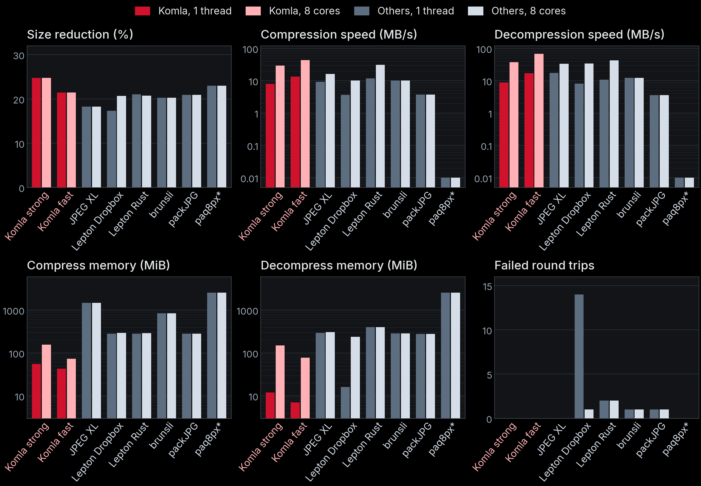

Professor of Mathematics
Paata Ivanisvili
Department of Mathematics, University of California, Irvine
Image compression
Komla is a lossless JPEG recompressor. It makes existing JPEG files smaller and restores them byte for byte.
Komla strong (komla compress --strong) is the strongest model. Komla fast (komla compress --fast) is the faster model, and it saves less.
Benchmark
Held-out random set of 66 files (317.5 MB). The files were frozen by SHA-256 before any tuning, and the set was run once.


One thread
| Tool | Size % | Compress MB/s | Decompress MB/s | Compress MiB | Decompress MiB | Fails |
|---|---|---|---|---|---|---|
| Komla strong | 24.73 | 8.04 | 8.82 | 55 | 12 | 0 |
| Komla fast | 21.44 | 13.37 | 17.18 | 43 | 7 | 0 |
| JPEG XL | 18.26 | 9.24 | 17.27 | 1471 | 295 | 0 |
| Lepton (Dropbox) | 17.34 | 3.64 | 8.15 | 280 | 16 | 14 |
| Lepton (Rust port) | 21.05 | 11.70 | 10.75 | 281 | 399 | 2 |
| brunsli | 20.29 | 10.24 | 12.27 | 844 | 286 | 1 |
| packJPG | 20.92 | 3.75 | 3.58 | 283 | 278 | 1 |
| paq8px* | 23.00 | 0.01 | 0.01 | 2553 | 2553 | 0 |
Eight cores
| Tool | Size % | Compress MB/s | Decompress MB/s | Compress MiB | Decompress MiB | Fails |
|---|---|---|---|---|---|---|
| Komla strong | 24.73 | 29.45 | 37.60 | 156 | 150 | 0 |
| Komla fast | 21.44 | 43.40 | 68.17 | 73 | 78 | 0 |
| JPEG XL | 18.26 | 16.11 | 33.35 | 1467 | 307 | 0 |
| Lepton (Dropbox) | 20.71 | 10.24 | 33.92 | 294 | 238 | 1 |
| Lepton (Rust port) | 20.73 | 30.88 | 42.73 | 291 | 399 | 2 |
| brunsli | 20.29 | 10.24 | 12.27 | 844 | 286 | 1 |
| packJPG | 20.92 | 3.75 | 3.58 | 283 | 278 | 1 |
| paq8px* | 23.00 | 0.01 | 0.01 | 2553 | 2553 | 0 |
Higher is better for size and speed. Lower is better for memory and for failures, out of 66. brunsli, packJPG and paq8px have no threads, so their eight-core rows repeat the one-thread run.
Komla strong saves 24.73%, against 21.05% for the best practical tool, Lepton’s Rust port, so its files are about 4.7% smaller. It uses far less memory than the others.
On this set, for every other tool, either Komla strong or Komla fast is at least as good on every metric. The one tie is Komla fast against JPEG XL on one-thread decompression (17.18 against 17.27 MB/s).
paq8px is about 2.4 points smaller on sequential (baseline) JPEGs, at roughly 600 to 3,300 times the time. It has no model for progressive JPEGs. On the full set of 66 files, Komla strong saves 24.73% and paq8px saves 23.00%.
Caveats
A failed file is one the tool refused. It is counted at its original size. No tool restored a file wrongly.
Lepton (Dropbox) refuses 14 files on one thread and 1 file on eight cores. That is why its saving rises from 17.34% to 20.71%: the files it refuses are counted at their original size. JPEG XL here is its default effort. A higher effort makes it smaller and slower.
Strong mode is new, so it has not had the long field use the mature tools have. It has a safety net: any file it cannot reproduce exactly is stored as it is. On this set that fallback was not used, and every file was recompressed.
Code
- The code is at github.com/paatai/Compress.
- Strong mode is in pull request 3, on the branch
cursor/jpeg-strong-model-d777. - The full report is bench/results/JPEG_SPEED_REPORT.md on that branch.
- The web app runs in the browser and offers Fast and Strong. Fast is the default. Restoring a file does not ask which model was used.
Prepared with Grok Bot with Cursor agents.